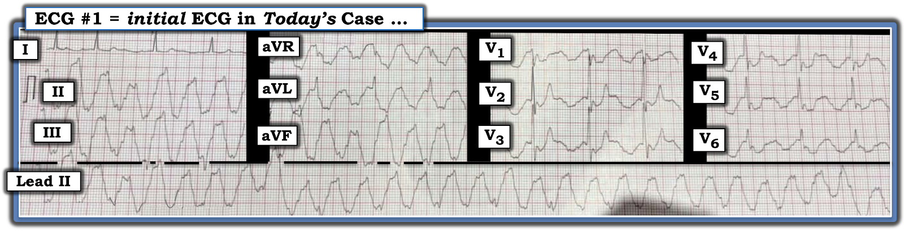
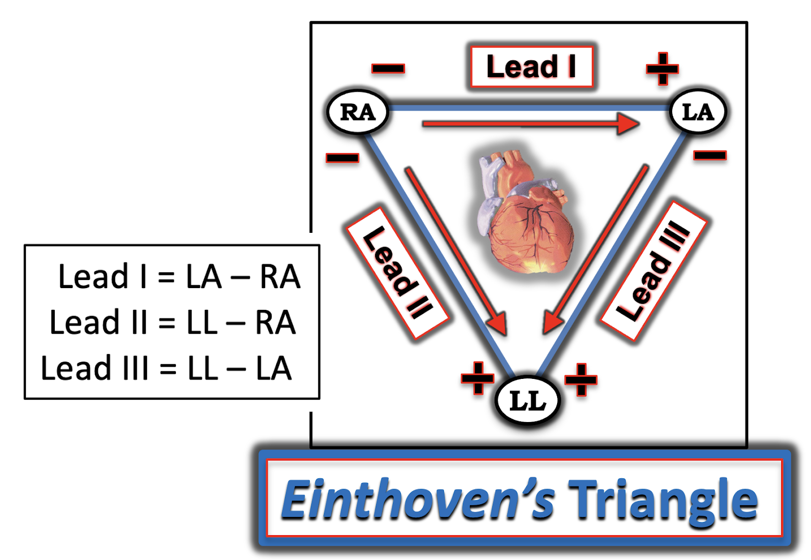
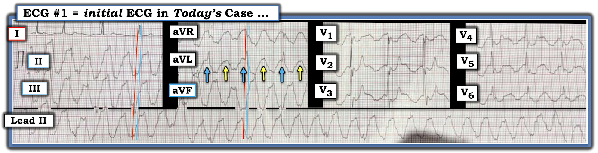
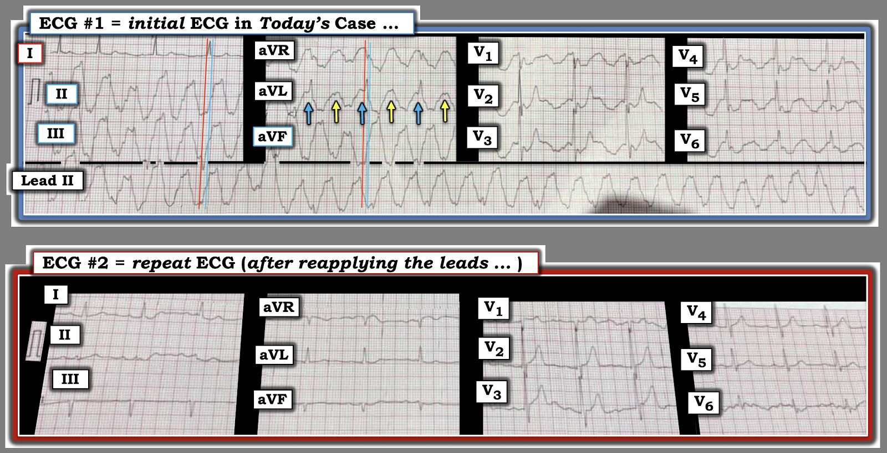
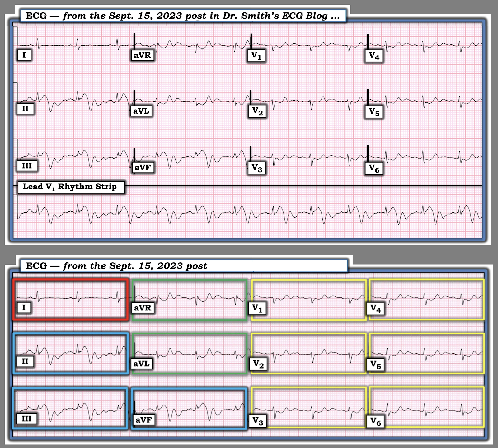

ECG Blog #527 — Chuyện gì đang xảy ra?
Điện tâm đồ ở Hình 1 — được ghi ở một người đàn ông lớn tuổi đến khám vì CP (Chest Pain – đau ngực) mới xuất hiện.
CÂU HỎI:
- Có nên kích hoạt phòng thông tim (cath lab) không?


SUY NGHĨ CỦA TÔI:
Thoạt nhìn bản ghi hôm nay của bệnh nhân đau ngực (CP) mới xuất hiện này — rất dễ lo lắng nhiều vì đoạn ST lệch rõ rệt. Và rồi — tôi nhìn kỹ hơn vào chuyển đạo I:
- ĐIỂM THEN CHỐT (PEARL) #1: So với 11 chuyển đạo còn lại trong bản ghi này — phức bộ QRST ở chuyển đạo I trông gần như bình thường (chỉ có ST-T dẹt không đặc hiệu kín đáo ở chuyển đạo này). Manh mối tôi ưa dùng nhất cho thấy nhiễu là nguyên nhân gây ra các phức bộ kỳ dị, biến dạng rõ ở nhiều (phần lớn) chuyển đạo khác — là một trong 3 chuyển đạo chuẩn trông tương đối bình thường. Và dù có các biến dạng ST-T rất ấn tượng (và kỳ dị) ở 2 chuyển đạo chuẩn còn lại ( = chuyển đạo II và III ở Hình 1) — sóng ST-T ở chuyển đạo I trông như tương đối không bị ảnh hưởng!
ĐIỂM THEN CHỐT #2: Như đã bàn trong ECG Blog #201 — Sự phân bố của các biến dạng ST-T kỳ dị thấy ở Hình 1 — tuân theo chính xác vị trí và mức độ biến dạng biên độ tương đối mà tam giác Einthoven dự đoán.
- Nghĩa là — mức độ ST chênh lên kỳ dị tương đối xấp xỉ bằng nhau ở 2 trong 3 chuyển đạo chi chuẩn (tức là ở chuyển đạo II và III) — nhưng hoàn toàn không thấy ở chuyển đạo chi chuẩn thứ 3 (tức là không thấy nhiễu ở chuyển đạo I). Theo tam giác Einthoven (Xem hình tam giác Einthoven ngay bên dưới ECG Media Pearl của hôm nay) — việc thấy nhiễu biên độ đoạn ST bằng nhau ở chuyển đạo II và chuyển đạo III giúp khu trú chi "thủ phạm" là điện cực LL ( = Left Leg – chân trái).
- Việc không có bất kỳ nhiễu nào ở chuyển đạo I là phù hợp với điều này — vì chuyển đạo chi chuẩn lưỡng cực I được tạo ra từ hiệu điện thế giữa điện cực RA ( = Right Arm – tay phải) và LA ( = Left Arm – tay trái), nên sẽ không bị ảnh hưởng nếu nguồn gây nhiễu là chân trái.
- Như tôi trình bày chi tiết trong Audio Pearl bên dưới — việc thấy nhiễu có biên độ tối đa ở chuyển đạo aVF đơn cực xác nhận rằng chân trái là chi “thủ phạm”.

ECG Media PEARL #18 (7:45 phút Audio) — Về việc nhận ra nhiễu — và — dùng tam giác Einthoven để xác định trong vòng vài giây chi “thủ phạm” gây ra nhiễu trên điện tâm đồ của bạn.


===============================
ĐIỂM THEN CHỐT #3: Một manh mối MẤU CHỐT khác cho thấy có nhiễu — là khi bạn có thể thấy nhịp nền tiếp diễn không bị xáo trộn bất chấp nhiễu! Hình 2 cho thấy điều này khả thi thế nào trong ca hôm nay:
- Thực ra có 2 biến dạng do nhiễu trong mỗi khoảng R-R ở bản ghi ban đầu hôm nay (các mũi tên XANH LAM và VÀNG xen kẽ ở chuyển đạo aVL trong Hình 2). Chúng hiện ra dưới dạng hai biến dạng dương trong mỗi khoảng R-R ở tất cả chuyển đạo chi trừ chuyển đạo I — và dưới dạng hai biến dạng nhiễu âm trong mỗi khoảng R-R ở 6 chuyển đạo trước ngực.
- Tập trung vào phức bộ QRS ở chuyển đạo I không bị nhiễu ảnh hưởng — tôi đã thêm một đường mốc thời gian MÀU ĐỎ song song với đường lưới điện tâm đồ, kéo dài qua các chuyển đạo II và III ghi đồng thời — với đường mốc thời gian này đánh dấu điểm bắt đầu của phức bộ QRS mà ta thấy rõ ở chuyển đạo I.
- Tôi cũng thêm một đường mốc thời gian MÀU XANH LAM đánh dấu điểm kết thúc QRS ở chuyển đạo I. Như vậy, ta thấy phức bộ QRS ở chuyển đạo I nằm giữa đường ĐỎ và đường XANH LAM. Điều này cho phép ta lần theo các đường ĐỎ và XANH LAM này để biết cần tìm ở đâu các phức bộ QRS "đúng lúc" khác bị che khuất một phần ở các chuyển đạo ghi đồng thời (và ít nhất ở chuyển đạo III — ta có thể nhận ra một phức bộ rS nhỏ "đúng lúc" giữa 2 đường mốc thời gian này).
- Tôi đã thêm các đường ĐỎ và XANH LAM tương tự ở chuyển đạo aVL — gợi ý rằng các biến dạng QRS nền "đúng lúc" rất nhỏ, kín đáo vẫn tiếp diễn ở hầu hết các nhát trong chuyển đạo aVR và aVF ghi đồng thời.
- Tất nhiên, sự hiện diện liên tục của các phức bộ QRS "đúng lúc" dễ thấy hơn nhiều ở các chuyển đạo trước ngực — vì các phức bộ nhiễu chủ yếu âm xuất hiện sau QRS, và do đó không che khuất QRS.
- LƯU Ý: Lý do các đường ĐỎ và XANH LAM mà tôi thêm vào Hình 2 không "thẳng đứng" — là vì điện tâm đồ này là ảnh chụp màn hình, trong đó có độ nghiêng gây ra một mức biến dạng. Nhưng các đường màu này có song song với các đường lưới đậm — nên việc định thời các phức bộ ở các chuyển đạo ghi đồng thời là chính xác.


===============================
Ca bệnh tiếp diễn:
Trong ca hôm nay đã nghi ngờ có nhiễu. Do đó — nhân viên y tế đã tháo ra, rồi gắn lại các điện cực. Sau đó họ ghi điện tâm đồ lần sau được trình bày ở Hình 3 dưới đây. Nhận định của bạn?


Suy nghĩ của tôi về Hình 3:
Sau khi đặt lại vị trí các điện cực — nhiễu thấy ở điện tâm đồ #1 đã hết hoàn toàn!
- Nhiễu ở điện tâm đồ #1 là hậu quả của PTA = nhiễu do mạch đập (Pulse-Tap Artifact) (Xem bên dưới).
- Điện tâm đồ #2 xác nhận rằng các biến dạng nhỏ xíu thấy giữa các đường mốc thời gian ĐỎ và XANH LAM ở các chuyển đạo III, aVR và aVF ghi đồng thời — đúng là các phức bộ QRS nền "đúng lúc" đã bị che khuất một phần ở các chuyển đạo này.
- Điện tâm đồ #2 cho ta thấy lý do phức bộ QRS ở chuyển đạo II rất khó thấy trên điện tâm đồ ban đầu — cụ thể là sau khi hết nhiễu ở điện tâm đồ #2, ta thấy phức bộ QRS đẳng điện ở chuyển đạo II thực sự nhỏ đến mức nào.
- Ta cũng thấy hình dạng rS rất nhỏ của QRS mà ta đã nhận ra ở chuyển đạo III trên điện tâm đồ #1 tương đồng với hình dạng QRS ở chuyển đạo này sau khi hết nhiễu.
===============================
PTA (nhiễu do mạch đập – Pulse-Tap Artifact):
Như Samaniego và cs. đã nhấn mạnh (Emerg Med J 20:356-357, 2003) — có 2 nguồn nhiễu chính, là nguồn "sinh lý" và nguồn "không sinh lý".
- Các nguồn nhiễu không sinh lý — gồm nhiễu từ dòng điện 60 hertz (từ các thiết bị dùng điện xoay chiều ở xung quanh) — và/hoặc trục trặc dây cáp hay điện cực (tức là dây lỏng hoặc đứt, đầu nối điện cực lỏng, v.v.).
- Các nguồn nhiễu sinh lý — gồm cử động của bệnh nhân và/hoặc hoạt động cơ chủ ý hay không chủ ý (tức là run, rùng mình, gãi, ho, nấc, thở gắng sức — và PTA, cùng nhiều nguồn khác).
Nhiễu do mạch đập (Pulse-Tap Artifact) — là nhiễu sinh lý, vì nó do một trong 4 điện cực chi tiếp xúc với một động mạch đang đập. Do nhịp đập của động mạch là kết quả của co bóp tim — PTA xuất hiện ở một khoảng cố định so với mỗi phức bộ QRS đi trước.
- Lần thứ 1 tôi thấy PTA trên điện tâm đồ — tôi đã không biết hiện tượng này là gì. Từ đó đến nay — tôi đã gặp rất nhiều ca (Xem ECG Blog #201 — ECG Blog #490 — cùng nhiều ví dụ khác về PTA từ Dr. Smith's ECG Blog, như trình bày trên Trang Đảo điện cực – Nhiễu (Lead Reversal-Artifact Page) của tôi).
- "Tin vui" là một khi bạn đã biết đến PTA — bạn sẽ có thể nhận ra nó ngay lập tức nhờ các mối quan hệ hình học mà nó tạo ra, được kiểm chứng bằng tam giác Einthoven (như tôi đã bàn ở trên cho ca hôm nay — và củng cố thêm ở PHẦN BỔ SUNG bên dưới).
ĐIỂM THEN CHỐT #4: Dù vậy — ca hôm nay độc đáo vì thay vì thấy một biến dạng nhiễu duy nhất liên hệ với mỗi phức bộ QRS đi trước bằng một khoảng cố định ở 2 trong 3 chuyển đạo chuẩn — ta thấy 2 biến dạng nhiễu với mỗi nhát! (theo các mũi tên XANH LAM và VÀNG xen kẽ ở chuyển đạo aVL của điện tâm đồ #1 trong Hình 3).
- Trước ca hôm nay — mọi ví dụ PTA tôi từng gặp chỉ có một biến dạng nhiễu duy nhất với mỗi nhát.
- Tuy nhiên, như thấy trong ca hôm nay — PTA có thể biểu hiện bằng 2 biến dạng riêng biệt trong mỗi khoảng R-R. Đó là vì chuyển động cơ học của động mạch đang đập thực sự có thể chạm vào điện cực nằm trên nó hai lần trong mỗi chu chuyển tim ( = Một lần khi động mạch giãn ra, như xảy ra trong tâm thu — và lần thứ 2 khi động mạch giãn nghỉ trong tâm trương).
==================================
Lời cảm ơn: Tôi xin cảm ơn Bashiruddin Sayeem (đến từ Chittagong, Bangladesh) đã chia sẻ ca bệnh và bản ghi này.
==================================

PHẦN BỔ SUNG (18/4/2026):
Để củng cố các khái niệm giúp nhận ra ngay lập tức chi "thủ phạm" gây ra PTA — tôi đã đưa lại ở Hình 4 hình minh họa mà tôi xây dựng cho bình luận của tôi (My Comment), có thể tìm thấy ở cuối trang của bài đăng ngày 15 tháng Chín năm 2023 trên Dr. Smith's ECG Blog.
Cách nhận ra PTA trong vòng vài giây!
Trước hết hãy nhìn vào bản ghi PHÍA TRÊN ở Hình 4. Các biến dạng kỳ dị ở nhiều chuyển đạo ngay lập tức gợi ý một dạng nhiễu nào đó.
- Ta biết mình đang nhìn thấy nhiễu ở hình PHÍA TRÊN này — vì dù QRST biến dạng rõ ở chuyển đạo II và III — chuyển đạo chi chuẩn thứ 3 ( = chuyển đạo I) không bị nhiễu ảnh hưởng!
- Ta biết nhiễu này là nhiễu sinh lý và liên quan đến chu chuyển tim vì khoảng cách cố định của nhiễu này sau mỗi phức bộ QRS (thấy rõ nhất ở dải nhịp chuyển đạo II dài).
- Ta cũng biết nhiễu này là hậu quả của một chi "thủ phạm" duy nhất — vì nó tuân theo các quy luật do tam giác Einthoven đặt ra.
Để dễ nhận ra các quy luật của tam giác Einthoven này — tôi đã ghi nhãn cho bản ghi PHÍA DƯỚI ở Hình 4 — và một lần nữa đưa thêm sơ đồ tạo thành các chuyển đạo của tam giác Einthoven (ở Hình 5 bên dưới).
- Chuyển đạo I không bị nhiễu ảnh hưởng (trong hình chữ nhật ĐỎ).
- Nhiễu tối đa thấy ở 2 chuyển đạo chi chuẩn còn lại ( = chuyển đạo II và III) — cũng như ở chuyển đạo tăng thế chung cho cả hai chuyển đạo chi có nhiễu tối đa này (trong ca này là chuyển đạo aVF, được đặt ở chi LL = Left Leg – chân trái — với 3 chuyển đạo này [ = chuyển đạo II,III,aVF] cho thấy nhiễu tối đa, như trong các hình chữ nhật XANH LAM ở Hình 4).
- ĐIỂM THEN CHỐT #5: Chính nhờ tìm chuyển đạo tăng thế có nhiễu tối đa — mà ta có thể nhận ra ngay lập tức chi "thủ phạm" ( = điện cực LL = chân trái trong ca hôm nay).
- 2 chuyển đạo tăng thế còn lại ( = chuyển đạo aVR và aVL — trong các hình chữ nhật XANH LÁ) — cho thấy lượng nhiễu xấp xỉ một nửa so với nhiễu tối đa thấy ở chuyển đạo II,III,aVF.
- Xác nhận cuối cùng rằng điều duy nhất có thể tạo ra các mối quan hệ toán học này là PTA — đến từ việc thấy lượng nhiễu ít hơn ở mỗi chuyển đạo trước ngực (xấp xỉ 1/3 lượng nhiễu, như trong các hình chữ nhật VÀNG).
- ĐIỀU CỐT LÕI: Tôi thật sự chỉ mất không quá vài giây để nhận ra PTA trên bản ghi ban đầu hôm nay vì: i) Dù có các biến dạng kỳ dị ở nhiều chuyển đạo — tôi ngay lập tức thấy chuyển đạo I trông bình thường; — và, ii) Tôi thấy nhiễu tối đa ở 2 chuyển đạo chi chuẩn còn lại ( = chuyển đạo II,III) — cùng với việc chuyển đạo tăng thế có nhiễu tối đa là chuyển đạo aVF cho tôi biết cần nhìn vào chân trái (left Foot) (tức điện cực LL) để tìm nguồn gây PTA.


==================================
Vượt ra ngoài phần cốt lõi:
Tôi đưa lại dưới đây ở Hình 6, 7 và 8 — bài báo 3 trang của Rowlands và Moore (J. Electrocardiology 40: 475-477, 2007) — đây là bài tổng quan HAY NHẤT tôi từng đọc về cơ chế sinh lý giải thích kích thước tương đối của biên độ các biến dạng nhiễu khi nguyên nhân gây nhiễu là một chi duy nhất. Các nguyên lý này được minh họa ở trên qua các biến dạng trong các hình chữ nhật có màu ở Hình 4.
- Như các phương trình ở trang 477 trong bài của Rowlands và Moore đã nêu: i) Biên độ nhiễu tối đa ở điện cực tăng thế đơn cực của chi “thủ phạm” — tức chuyển đạo aVF ở Hình 4; và — ii) Biên độ nhiễu ở 2 chuyển đạo tăng thế còn lại (tức là chuyển đạo aVR và aVL) bằng khoảng 1/2 biên độ nhiễu ở chuyển đạo aVF (trong các hình chữ nhật XANH LÁ ở Hình 4).
- Tương tự — biên độ các biến dạng nhiễu ở 6 chuyển đạo trước ngực đơn cực ở Hình 4 cũng giảm đáng kể so với biên độ tối đa thấy ở chuyển đạo II, III và aVF (trong các hình chữ nhật VÀNG ở mỗi chuyển đạo trong 6 chuyển đạo trước ngực).
- Không có gì khác cho thấy liên hệ cố định với phức bộ QRS theo các mối quan hệ toán học mô tả ở trên, trong đó biến dạng nhiễu tối đa bằng nhau ở 2 trong 3 chuyển đạo chi (và hoàn toàn không có nhiễu ở chuyển đạo chi thứ 3) — trong đó nhiễu tối đa ở chuyển đạo tăng thế đơn cực sẽ thấy ở điện cực chi chung cho 2 chuyển đạo chi có nhiễu tối đa (theo tam giác Einthoven).